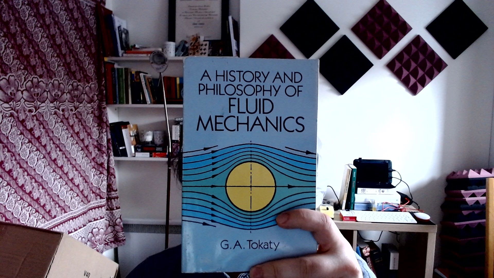

Fluids:
Hydrostatics I
Dr Shane V Crowley
Press down for controls and right to progress
Interacting with the Slides
📺Full screen: press the F key
🎮View video controls: hover cursor over video
👩🎨 Draw: click icon or press C
🌈Pen colour: press X to cycle and Y to revert
💁 Options and Info: click icon or press M
Link to video below:
👉https://youtu.be/1dfNInE4FbM
Click here for printable version (within reason)👈
Observations of Fluids
Sometimes we want to move fluids
Sometimes we want to stop fluids
Questions in this Section
- What is pressure?
- Why is pressure important?
- How do we measure pressure?
- Can we process with pressure?
Branches
Fluids 🥛 🍷 🍺
- Fluids = {liquid, gas, plasma}
- We will mostly talk about liquids
- Important note: powders are "fluidisable"
Fluids at Rest
Pressure at rest (statics) can cause flow (dynamics)
Hydrostatic Pressure
$$P = \rho \cdot g \cdot h$$
$$P_A = P_S + \rho \cdot g \cdot h$$
Note: this is only one kind of pressure
Some Consequences
- The Hydrostatic Paradox (Pascal's barrel)
- A pressure head can lift a column of water
- We can talk of absolute and gauge pressure
It's the Height, Not the Weight 😕
Remember this 💭
In the same way that we say there is an energy balance in a system we also say there is a pressure balance
This balance is expressed with Bernoulli's equation
$$\color{violet}{P} + \color{orange}{\rho \cdot \frac{v^2}{2}} + \color{aqua}{\rho \cdot g \cdot h} = constant$$
$$\color{violet}{\frac{P}{\rho \cdot g}} + \color{orange}{\frac{v^2}{2g}} + \color{aqua}{h} = constant$$
$$v = \sqrt{2g\color{aqua}{h}}$$
Toricelli's law doesn't account for viscosity and in food systems this is very important. . .
Next Lecture
Role of viscosity & pressure gauges
shane.crowley@ucc.ie